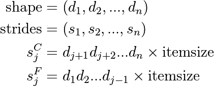
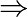
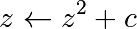
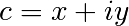
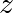
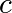

2.2. Advanced NumPy¶
Author: Pauli Virtanen
NumPy is at the base of Python’s scientific stack of tools. Its purpose to implement efficient operations on many items in a block of memory. Understanding how it works in detail helps in making efficient use of its flexibility, taking useful shortcuts.
This section covers:
- Anatomy of NumPy arrays, and its consequences. Tips and tricks.
- Universal functions: what, why, and what to do if you want a new one.
- Integration with other tools: NumPy offers several ways to wrap any data in an ndarray, without unnecessary copies.
- Recently added features, and what’s in them: PEP 3118 buffers, generalized ufuncs, …
Prerequisites
- NumPy
- Cython
- Pillow (Python imaging library, used in a couple of examples)
Chapter contents
- Life of ndarray
- Universal functions
- Interoperability features
- Array siblings:
chararray,maskedarray,matrixchararray: vectorized string operationsmasked_arraymissing datarecarray: purely conveniencematrix: convenience?
- Summary
- Contributing to NumPy/Scipy
Tip
In this section, numpy will be imported as follows:
>>> import numpy as np
2.2.1. Life of ndarray¶
2.2.1.1. It’s…¶
ndarray =
block of memory + indexing scheme + data type descriptor
- raw data
- how to locate an element
- how to interpret an element

typedef struct PyArrayObject {
PyObject_HEAD
/* Block of memory */
char *data;
/* Data type descriptor */
PyArray_Descr *descr;
/* Indexing scheme */
int nd;
npy_intp *dimensions;
npy_intp *strides;
/* Other stuff */
PyObject *base;
int flags;
PyObject *weakreflist;
} PyArrayObject;
2.2.1.2. Block of memory¶
>>> x = np.array([1, 2, 3], dtype=np.int32)
>>> x.data
<... at ...>
>>> bytes(x.data)
'\x01\x00\x00\x00\x02\x00\x00\x00\x03\x00\x00\x00'
Memory address of the data:
>>> x.__array_interface__['data'][0]
64803824
The whole __array_interface__:
>>> x.__array_interface__
{'data': (35828928, False),
'descr': [('', '<i4')],
'shape': (4,),
'strides': None,
'typestr': '<i4',
'version': 3}
Reminder: two ndarrays may share the same memory:
>>> x = np.array([1, 2, 3, 4])
>>> y = x[:-1]
>>> x[0] = 9
>>> y
array([9, 2, 3])
Memory does not need to be owned by an ndarray:
>>> x = b'1234' # The 'b' is for "bytes", necessary in Python 3
x is a string (in Python 3 a bytes), we can represent its data as an array of ints:
>>> y = np.frombuffer(x, dtype=np.int8)
>>> y.data
<... at ...>
>>> y.base is x
True
>>> y.flags
C_CONTIGUOUS : True
F_CONTIGUOUS : True
OWNDATA : False
WRITEABLE : False
ALIGNED : True
WRITEBACKIFCOPY : False
UPDATEIFCOPY : False
The owndata and writeable flags indicate status of the memory
block.
See also
2.2.1.3. Data types¶
The descriptor¶
dtype describes a single item in the array:
| type | scalar type of the data, one of: int8, int16, float64, et al. (fixed size) str, unicode, void (flexible size) |
| itemsize | size of the data block |
| byteorder | byte order: big-endian > / little-endian < / not applicable | |
| fields | sub-dtypes, if it’s a structured data type |
| shape | shape of the array, if it’s a sub-array |
>>> np.dtype(int).type
<type 'numpy.int64'>
>>> np.dtype(int).itemsize
8
>>> np.dtype(int).byteorder
'='
Example: reading .wav files¶
The .wav file header:
| chunk_id | "RIFF" |
| chunk_size | 4-byte unsigned little-endian integer |
| format | "WAVE" |
| fmt_id | "fmt " |
| fmt_size | 4-byte unsigned little-endian integer |
| audio_fmt | 2-byte unsigned little-endian integer |
| num_channels | 2-byte unsigned little-endian integer |
| sample_rate | 4-byte unsigned little-endian integer |
| byte_rate | 4-byte unsigned little-endian integer |
| block_align | 2-byte unsigned little-endian integer |
| bits_per_sample | 2-byte unsigned little-endian integer |
| data_id | "data" |
| data_size | 4-byte unsigned little-endian integer |
- 44-byte block of raw data (in the beginning of the file)
- … followed by
data_sizebytes of actual sound data.
The .wav file header as a NumPy structured data type:
>>> wav_header_dtype = np.dtype([
... ("chunk_id", (bytes, 4)), # flexible-sized scalar type, item size 4
... ("chunk_size", "<u4"), # little-endian unsigned 32-bit integer
... ("format", "S4"), # 4-byte string
... ("fmt_id", "S4"),
... ("fmt_size", "<u4"),
... ("audio_fmt", "<u2"), #
... ("num_channels", "<u2"), # .. more of the same ...
... ("sample_rate", "<u4"), #
... ("byte_rate", "<u4"),
... ("block_align", "<u2"),
... ("bits_per_sample", "<u2"),
... ("data_id", ("S1", (2, 2))), # sub-array, just for fun!
... ("data_size", "u4"),
... #
... # the sound data itself cannot be represented here:
... # it does not have a fixed size
... ])
See also
wavreader.py
>>> wav_header_dtype['format']
dtype('S4')
>>> wav_header_dtype.fields
dict_proxy({'block_align': (dtype('uint16'), 32), 'format': (dtype('S4'), 8), 'data_id': (dtype(('S1', (2, 2))), 36), 'fmt_id': (dtype('S4'), 12), 'byte_rate': (dtype('uint32'), 28), 'chunk_id': (dtype('S4'), 0), 'num_channels': (dtype('uint16'), 22), 'sample_rate': (dtype('uint32'), 24), 'bits_per_sample': (dtype('uint16'), 34), 'chunk_size': (dtype('uint32'), 4), 'fmt_size': (dtype('uint32'), 16), 'data_size': (dtype('uint32'), 40), 'audio_fmt': (dtype('uint16'), 20)})
>>> wav_header_dtype.fields['format']
(dtype('S4'), 8)
- The first element is the sub-dtype in the structured data, corresponding
to the name
format - The second one is its offset (in bytes) from the beginning of the item
Exercise
Mini-exercise, make a “sparse” dtype by using offsets, and only some of the fields:
>>> wav_header_dtype = np.dtype(dict(
... names=['format', 'sample_rate', 'data_id'],
... offsets=[offset_1, offset_2, offset_3], # counted from start of structure in bytes
... formats=list of dtypes for each of the fields,
... ))
and use that to read the sample rate, and data_id (as sub-array).
>>> f = open('data/test.wav', 'r')
>>> wav_header = np.fromfile(f, dtype=wav_header_dtype, count=1)
>>> f.close()
>>> print(wav_header)
[ ('RIFF', 17402L, 'WAVE', 'fmt ', 16L, 1, 1, 16000L, 32000L, 2, 16, [['d', 'a'], ['t', 'a']], 17366L)]
>>> wav_header['sample_rate']
array([16000], dtype=uint32)
Let’s try accessing the sub-array:
>>> wav_header['data_id']
array([[['d', 'a'],
['t', 'a']]],
dtype='|S1')
>>> wav_header.shape
(1,)
>>> wav_header['data_id'].shape
(1, 2, 2)
When accessing sub-arrays, the dimensions get added to the end!
Note
There are existing modules such as wavfile, audiolab,
etc. for loading sound data…
Casting and re-interpretation/views¶
casting
- on assignment
- on array construction
- on arithmetic
- etc.
- and manually:
.astype(dtype)
data re-interpretation
- manually:
.view(dtype)
Casting¶
Casting in arithmetic, in nutshell:
- only type (not value!) of operands matters
- largest “safe” type able to represent both is picked
- scalars can “lose” to arrays in some situations
Casting in general copies data:
>>> x = np.array([1, 2, 3, 4], dtype=np.float) >>> x array([1., 2., 3., 4.]) >>> y = x.astype(np.int8) >>> y array([1, 2, 3, 4], dtype=int8) >>> y + 1 array([2, 3, 4, 5], dtype=int8) >>> y + 256 array([257, 258, 259, 260], dtype=int16) >>> y + 256.0 array([257., 258., 259., 260.]) >>> y + np.array([256], dtype=np.int32) array([257, 258, 259, 260], dtype=int32)
Casting on setitem: dtype of the array is not changed on item assignment:
>>> y[:] = y + 1.5 >>> y array([2, 3, 4, 5], dtype=int8)
Note
Exact rules: see numpy documentation
Re-interpretation / viewing¶
Data block in memory (4 bytes)
0x01|| 0x02|| 0x03|| 0x04- 4 of uint8, OR,
- 4 of int8, OR,
- 2 of int16, OR,
- 1 of int32, OR,
- 1 of float32, OR,
- …
How to switch from one to another?
Switch the dtype:
>>> x = np.array([1, 2, 3, 4], dtype=np.uint8) >>> x.dtype = "<i2" >>> x array([ 513, 1027], dtype=int16) >>> 0x0201, 0x0403 (513, 1027)
0x010x02|| 0x030x04Note
little-endian: least significant byte is on the left in memory
Create a new view:
>>> y = x.view("<i4") >>> y array([67305985], dtype=int32) >>> 0x04030201 67305985
0x010x020x030x04
Note
.view()makes views, does not copy (or alter) the memory blockonly changes the dtype (and adjusts array shape):
>>> x[1] = 5 >>> y array([328193], dtype=int32) >>> y.base is x True
Mini-exercise: data re-interpretation
See also
view-colors.py
You have RGBA data in an array:
>>> x = np.zeros((10, 10, 4), dtype=np.int8)
>>> x[:, :, 0] = 1
>>> x[:, :, 1] = 2
>>> x[:, :, 2] = 3
>>> x[:, :, 3] = 4
where the last three dimensions are the R, B, and G, and alpha channels.
How to make a (10, 10) structured array with field names ‘r’, ‘g’, ‘b’, ‘a’ without copying data?
>>> y = ...
>>> assert (y['r'] == 1).all()
>>> assert (y['g'] == 2).all()
>>> assert (y['b'] == 3).all()
>>> assert (y['a'] == 4).all()
Solution
Warning
Another array taking exactly 4 bytes of memory:
>>> y = np.array([[1, 3], [2, 4]], dtype=np.uint8).transpose()
>>> x = y.copy()
>>> x
array([[1, 2],
[3, 4]], dtype=uint8)
>>> y
array([[1, 2],
[3, 4]], dtype=uint8)
>>> x.view(np.int16)
array([[ 513],
[1027]], dtype=int16)
>>> 0x0201, 0x0403
(513, 1027)
>>> y.view(np.int16)
array([[ 769, 1026]], dtype=int16)
- What happened?
- … we need to look into what
x[0,1]actually means
>>> 0x0301, 0x0402
(769, 1026)
2.2.1.4. Indexing scheme: strides¶
Main point¶
The question:
>>> x = np.array([[1, 2, 3],
... [4, 5, 6],
... [7, 8, 9]], dtype=np.int8)
>>> x.tobytes('A')
b'\x01\x02\x03\x04\x05\x06\x07\x08\t'
At which byte in ``x.data`` does the item ``x[1, 2]`` begin?
The answer (in NumPy)
- strides: the number of bytes to jump to find the next element
- 1 stride per dimension
>>> x.strides
(3, 1)
>>> byte_offset = 3*1 + 1*2 # to find x[1, 2]
>>> x.flat[byte_offset]
6
>>> x[1, 2]
6
- simple, **flexible**
C and Fortran order¶
Note
The Python built-in bytes returns bytes in C-order by default
which can cause confusion when trying to inspect memory layout. We use
numpy.ndarray.tobytes() with order=A instead, which preserves
the C or F ordering of the bytes in memory.
>>> x = np.array([[1, 2, 3],
... [4, 5, 6]], dtype=np.int16, order='C')
>>> x.strides
(6, 2)
>>> x.tobytes('A')
b'\x01\x00\x02\x00\x03\x00\x04\x00\x05\x00\x06\x00'
- Need to jump 6 bytes to find the next row
- Need to jump 2 bytes to find the next column
>>> y = np.array(x, order='F')
>>> y.strides
(2, 4)
>>> y.tobytes('A')
b'\x01\x00\x04\x00\x02\x00\x05\x00\x03\x00\x06\x00'
- Need to jump 2 bytes to find the next row
- Need to jump 4 bytes to find the next column
Similarly to higher dimensions:
- C: last dimensions vary fastest (= smaller strides)
- F: first dimensions vary fastest

Note
Now we can understand the behavior of .view():
>>> y = np.array([[1, 3], [2, 4]], dtype=np.uint8).transpose()
>>> x = y.copy()
Transposition does not affect the memory layout of the data, only strides
>>> x.strides
(2, 1)
>>> y.strides
(1, 2)
>>> x.tobytes('A')
b'\x01\x02\x03\x04'
>>> y.tobytes('A')
b'\x01\x03\x02\x04'
- the results are different when interpreted as 2 of int16
.copy()creates new arrays in the C order (by default)
Note
In-place operations with views
Prior to NumPy version 1.13, in-place operations with views could result in
incorrect results for large arrays.
Since version 1.13,
NumPy includes checks for memory overlap to
guarantee that results are consistent with the non in-place version
(e.g. a = a + a.T produces the same result as a += a.T).
Note however that this may result in the data being copied (as if using
a += a.T.copy()), ultimately resulting in more memory being used than
might otherwise be expected for in-place operations!
Slicing with integers¶
- Everything can be represented by changing only
shape,strides, and possibly adjusting thedatapointer! - Never makes copies of the data
>>> x = np.array([1, 2, 3, 4, 5, 6], dtype=np.int32)
>>> y = x[::-1]
>>> y
array([6, 5, 4, 3, 2, 1], dtype=int32)
>>> y.strides
(-4,)
>>> y = x[2:]
>>> y.__array_interface__['data'][0] - x.__array_interface__['data'][0]
8
>>> x = np.zeros((10, 10, 10), dtype=np.float)
>>> x.strides
(800, 80, 8)
>>> x[::2,::3,::4].strides
(1600, 240, 32)
Similarly, transposes never make copies (it just swaps strides):
>>> x = np.zeros((10, 10, 10), dtype=np.float) >>> x.strides (800, 80, 8) >>> x.T.strides (8, 80, 800)
But: not all reshaping operations can be represented by playing with strides:
>>> a = np.arange(6, dtype=np.int8).reshape(3, 2)
>>> b = a.T
>>> b.strides
(1, 2)
So far, so good. However:
>>> bytes(a.data)
b'\x00\x01\x02\x03\x04\x05'
>>> b
array([[0, 2, 4],
[1, 3, 5]], dtype=int8)
>>> c = b.reshape(3*2)
>>> c
array([0, 2, 4, 1, 3, 5], dtype=int8)
Here, there is no way to represent the array c given one stride
and the block of memory for a. Therefore, the reshape
operation needs to make a copy here.
Example: fake dimensions with strides¶
Stride manipulation
>>> from numpy.lib.stride_tricks import as_strided
>>> help(as_strided)
as_strided(x, shape=None, strides=None)
Make an ndarray from the given array with the given shape and strides
Warning
as_strided does not check that you stay inside the memory
block bounds…
>>> x = np.array([1, 2, 3, 4], dtype=np.int16)
>>> as_strided(x, strides=(2*2, ), shape=(2, ))
array([1, 3], dtype=int16)
>>> x[::2]
array([1, 3], dtype=int16)
See also
stride-fakedims.py
Exercise
array([1, 2, 3, 4], dtype=np.int8) -> array([[1, 2, 3, 4], [1, 2, 3, 4], [1, 2, 3, 4]], dtype=np.int8)using only
as_strided.:Hint: byte_offset = stride[0]*index[0] + stride[1]*index[1] + ...
Spoiler
Broadcasting¶
- Doing something useful with it: outer product
of
[1, 2, 3, 4]and[5, 6, 7]
>>> x = np.array([1, 2, 3, 4], dtype=np.int16)
>>> x2 = as_strided(x, strides=(0, 1*2), shape=(3, 4))
>>> x2
array([[1, 2, 3, 4],
[1, 2, 3, 4],
[1, 2, 3, 4]], dtype=int16)
>>> y = np.array([5, 6, 7], dtype=np.int16)
>>> y2 = as_strided(y, strides=(1*2, 0), shape=(3, 4))
>>> y2
array([[5, 5, 5, 5],
[6, 6, 6, 6],
[7, 7, 7, 7]], dtype=int16)
>>> x2 * y2
array([[ 5, 10, 15, 20],
[ 6, 12, 18, 24],
[ 7, 14, 21, 28]], dtype=int16)
… seems somehow familiar …
>>> x = np.array([1, 2, 3, 4], dtype=np.int16)
>>> y = np.array([5, 6, 7], dtype=np.int16)
>>> x[np.newaxis,:] * y[:,np.newaxis]
array([[ 5, 10, 15, 20],
[ 6, 12, 18, 24],
[ 7, 14, 21, 28]], dtype=int16)
- Internally, array broadcasting is indeed implemented using 0-strides.
More tricks: diagonals¶
See also
stride-diagonals.py
Challenge
Pick diagonal entries of the matrix: (assume C memory order):
>>> x = np.array([[1, 2, 3], ... [4, 5, 6], ... [7, 8, 9]], dtype=np.int32) >>> x_diag = as_strided(x, shape=(3,), strides=(???,))Pick the first super-diagonal entries
[2, 6].And the sub-diagonals?
- (Hint to the last two: slicing first moves the point where striding
- starts from.)
Solution
See also
stride-diagonals.py
Challenge
Compute the tensor trace:
>>> x = np.arange(5*5*5*5).reshape(5, 5, 5, 5) >>> s = 0 >>> for i in range(5): ... for j in range(5): ... s += x[j, i, j, i]by striding, and using
sum()on the result.>>> y = as_strided(x, shape=(5, 5), strides=(TODO, TODO)) >>> s2 = ... >>> assert s == s2
Solution
CPU cache effects¶
Memory layout can affect performance:
In [1]: x = np.zeros((20000,))
In [2]: y = np.zeros((20000*67,))[::67]
In [3]: x.shape, y.shape
((20000,), (20000,))
In [4]: %timeit x.sum()
100000 loops, best of 3: 0.180 ms per loop
In [5]: %timeit y.sum()
100000 loops, best of 3: 2.34 ms per loop
In [6]: x.strides, y.strides
((8,), (536,))
Smaller strides are faster?

- CPU pulls data from main memory to its cache in blocks
- If many array items consecutively operated on fit in a single block (small stride):
-  fewer transfers needed
- faster
2.2.1.5. Findings in dissection¶
- memory block: may be shared,
.base,.data - data type descriptor: structured data, sub-arrays, byte order,
casting, viewing,
.astype(),.view() - strided indexing: strides, C/F-order, slicing w/ integers,
as_strided, broadcasting, stride tricks,diag, CPU cache coherence
2.2.2. Universal functions¶
2.2.2.1. What they are?¶
Ufunc performs and elementwise operation on all elements of an array.
Examples:
np.add, np.subtract, scipy.special.*, ...
Automatically support: broadcasting, casting, …
The author of an ufunc only has to supply the elementwise operation, NumPy takes care of the rest.
The elementwise operation needs to be implemented in C (or, e.g., Cython)
Parts of an Ufunc¶
Provided by user
void ufunc_loop(void **args, int *dimensions, int *steps, void *data) { /* * int8 output = elementwise_function(int8 input_1, int8 input_2) * * This function must compute the ufunc for many values at once, * in the way shown below. */ char *input_1 = (char*)args[0]; char *input_2 = (char*)args[1]; char *output = (char*)args[2]; int i; for (i = 0; i < dimensions[0]; ++i) { *output = elementwise_function(*input_1, *input_2); input_1 += steps[0]; input_2 += steps[1]; output += steps[2]; } }
The NumPy part, built by
char types[3] types[0] = NPY_BYTE /* type of first input arg */ types[1] = NPY_BYTE /* type of second input arg */ types[2] = NPY_BYTE /* type of third input arg */ PyObject *python_ufunc = PyUFunc_FromFuncAndData( ufunc_loop, NULL, types, 1, /* ntypes */ 2, /* num_inputs */ 1, /* num_outputs */ identity_element, name, docstring, unused)
- A ufunc can also support multiple different input-output type combinations.
Making it easier¶
ufunc_loopis of very generic form, and NumPy provides pre-made onesPyUfunc_f_ffloat elementwise_func(float input_1)PyUfunc_ff_ffloat elementwise_func(float input_1, float input_2)PyUfunc_d_ddouble elementwise_func(double input_1)PyUfunc_dd_ddouble elementwise_func(double input_1, double input_2)PyUfunc_D_Delementwise_func(npy_cdouble *input, npy_cdouble* output)PyUfunc_DD_Delementwise_func(npy_cdouble *in1, npy_cdouble *in2, npy_cdouble* out)- Only
elementwise_funcneeds to be supplied - … except when your elementwise function is not in one of the above forms
- Only
2.2.2.2. Exercise: building an ufunc from scratch¶
The Mandelbrot fractal is defined by the iteration

where  is a complex number. This iteration is repeated – if  stays finite no matter how long the iteration runs,  belongs to the Mandelbrot set.
Make ufunc called
mandel(z0, c)that computes:z = z0 for k in range(iterations): z = z*z + c
say, 100 iterations or until
z.real**2 + z.imag**2 > 1000. Use it to determine which c are in the Mandelbrot set.Our function is a simple one, so make use of the
PyUFunc_*helpers.Write it in Cython
See also
mandel.pyx, mandelplot.py
Reminder: some pre-made Ufunc loops:
PyUfunc_f_f |
float elementwise_func(float input_1) |
PyUfunc_ff_f |
float elementwise_func(float input_1, float input_2) |
PyUfunc_d_d |
double elementwise_func(double input_1) |
PyUfunc_dd_d |
double elementwise_func(double input_1, double input_2) |
PyUfunc_D_D |
elementwise_func(complex_double *input, complex_double* output) |
PyUfunc_DD_D |
elementwise_func(complex_double *in1, complex_double *in2, complex_double* out) |
Type codes:
NPY_BOOL, NPY_BYTE, NPY_UBYTE, NPY_SHORT, NPY_USHORT, NPY_INT, NPY_UINT,
NPY_LONG, NPY_ULONG, NPY_LONGLONG, NPY_ULONGLONG, NPY_FLOAT, NPY_DOUBLE,
NPY_LONGDOUBLE, NPY_CFLOAT, NPY_CDOUBLE, NPY_CLONGDOUBLE, NPY_DATETIME,
NPY_TIMEDELTA, NPY_OBJECT, NPY_STRING, NPY_UNICODE, NPY_VOID
2.2.2.3. Solution: building an ufunc from scratch¶
# The elementwise function
# ------------------------
cdef void mandel_single_point(double complex *z_in,
double complex *c_in,
double complex *z_out) nogil:
#
# The Mandelbrot iteration
#
#
# Some points of note:
#
# - It's *NOT* allowed to call any Python functions here.
#
# The Ufunc loop runs with the Python Global Interpreter Lock released.
# Hence, the ``nogil``.
#
# - And so all local variables must be declared with ``cdef``
#
# - Note also that this function receives *pointers* to the data;
# the "traditional" solution to passing complex variables around
#
cdef double complex z = z_in[0]
cdef double complex c = c_in[0]
cdef int k # the integer we use in the for loop
# Straightforward iteration
for k in range(100):
z = z*z + c
if z.real**2 + z.imag**2 > 1000:
break
# Return the answer for this point
z_out[0] = z
# Boilerplate Cython definitions
#
# Pulls definitions from the Numpy C headers.
# -------------------------------------------
from numpy cimport import_array, import_ufunc
from numpy cimport (PyUFunc_FromFuncAndData,
PyUFuncGenericFunction)
from numpy cimport NPY_CDOUBLE
from numpy cimport PyUFunc_DD_D
# Required module initialization
# ------------------------------
import_array()
import_ufunc()
# The actual ufunc declaration
# ----------------------------
cdef PyUFuncGenericFunction loop_func[1]
cdef char input_output_types[3]
cdef void *elementwise_funcs[1]
loop_func[0] = PyUFunc_DD_D
input_output_types[0] = NPY_CDOUBLE
input_output_types[1] = NPY_CDOUBLE
input_output_types[2] = NPY_CDOUBLE
elementwise_funcs[0] = <void*>mandel_single_point
mandel = PyUFunc_FromFuncAndData(
loop_func,
elementwise_funcs,
input_output_types,
1, # number of supported input types
2, # number of input args
1, # number of output args
0, # `identity` element, never mind this
"mandel", # function name
"mandel(z, c) -> computes iterated z*z + c", # docstring
0 # unused
)
"""
Plot Mandelbrot
================
Plot the Mandelbrot ensemble.
"""
import numpy as np
import mandel
x = np.linspace(-1.7, 0.6, 1000)
y = np.linspace(-1.4, 1.4, 1000)
c = x[None,:] + 1j*y[:,None]
z = mandel.mandel(c, c)
import matplotlib.pyplot as plt
plt.imshow(abs(z)**2 < 1000, extent=[-1.7, 0.6, -1.4, 1.4])
plt.gray()
plt.show()

Note
Most of the boilerplate could be automated by these Cython modules:
https://github.com/cython/cython/wiki/MarkLodato-CreatingUfuncs
Several accepted input types
E.g. supporting both single- and double-precision versions
cdef void mandel_single_point(double complex *z_in,
double complex *c_in,
double complex *z_out) nogil:
...
cdef void mandel_single_point_singleprec(float complex *z_in,
float complex *c_in,
float complex *z_out) nogil:
...
cdef PyUFuncGenericFunction loop_funcs[2]
cdef char input_output_types[3*2]
cdef void *elementwise_funcs[1*2]
loop_funcs[0] = PyUFunc_DD_D
input_output_types[0] = NPY_CDOUBLE
input_output_types[1] = NPY_CDOUBLE
input_output_types[2] = NPY_CDOUBLE
elementwise_funcs[0] = <void*>mandel_single_point
loop_funcs[1] = PyUFunc_FF_F
input_output_types[3] = NPY_CFLOAT
input_output_types[4] = NPY_CFLOAT
input_output_types[5] = NPY_CFLOAT
elementwise_funcs[1] = <void*>mandel_single_point_singleprec
mandel = PyUFunc_FromFuncAndData(
loop_func,
elementwise_funcs,
input_output_types,
2, # number of supported input types <----------------
2, # number of input args
1, # number of output args
0, # `identity` element, never mind this
"mandel", # function name
"mandel(z, c) -> computes iterated z*z + c", # docstring
0 # unused
)
2.2.2.4. Generalized ufuncs¶
ufunc
output = elementwise_function(input)Both
outputandinputcan be a single array element only.
generalized ufunc
outputandinputcan be arrays with a fixed number of dimensionsFor example, matrix trace (sum of diag elements):
input shape = (n, n) output shape = () i.e. scalar (n, n) -> ()Matrix product:
input_1 shape = (m, n) input_2 shape = (n, p) output shape = (m, p) (m, n), (n, p) -> (m, p)
- This is called the “signature” of the generalized ufunc
- The dimensions on which the g-ufunc acts, are “core dimensions”
Status in NumPy
g-ufuncs are in NumPy already …
new ones can be created with
PyUFunc_FromFuncAndDataAndSignaturemost linear-algebra functions are implemented as g-ufuncs to enable working with stacked arrays:
>>> import numpy as np >>> np.linalg.det(np.random.rand(3, 5, 5)) array([ 0.00965823, -0.13344729, 0.04583961]) >>> np.linalg._umath_linalg.det.signature '(m,m)->()'
we also ship with a few g-ufuncs for testing, ATM:
>>> import numpy.core.umath_tests as ut >>> ut.matrix_multiply.signature '(m,n),(n,p)->(m,p)' >>> x = np.ones((10, 2, 4)) >>> y = np.ones((10, 4, 5)) >>> ut.matrix_multiply(x, y).shape (10, 2, 5)
in both examples the last two dimensions became core dimensions, and are modified as per the signature
otherwise, the g-ufunc operates “elementwise”
matrix multiplication this way could be useful for operating on many small matrices at once
Generalized ufunc loop
Matrix multiplication (m,n),(n,p) -> (m,p)
void gufunc_loop(void **args, int *dimensions, int *steps, void *data)
{
char *input_1 = (char*)args[0]; /* these are as previously */
char *input_2 = (char*)args[1];
char *output = (char*)args[2];
int input_1_stride_m = steps[3]; /* strides for the core dimensions */
int input_1_stride_n = steps[4]; /* are added after the non-core */
int input_2_strides_n = steps[5]; /* steps */
int input_2_strides_p = steps[6];
int output_strides_n = steps[7];
int output_strides_p = steps[8];
int m = dimension[1]; /* core dimensions are added after */
int n = dimension[2]; /* the main dimension; order as in */
int p = dimension[3]; /* signature */
int i;
for (i = 0; i < dimensions[0]; ++i) {
matmul_for_strided_matrices(input_1, input_2, output,
strides for each array...);
input_1 += steps[0];
input_2 += steps[1];
output += steps[2];
}
}
2.2.3. Interoperability features¶
2.2.3.1. Sharing multidimensional, typed data¶
Suppose you
- Write a library than handles (multidimensional) binary data,
- Want to make it easy to manipulate the data with NumPy, or whatever other library,
- … but would not like to have NumPy as a dependency.
Currently, 3 solutions:
- the “old” buffer interface
- the array interface
- the “new” buffer interface (PEP 3118)
2.2.3.2. The old buffer protocol¶
- Only 1-D buffers
- No data type information
- C-level interface;
PyBufferProcs tp_as_bufferin the type object - But it’s integrated into Python (e.g. strings support it)
Mini-exercise using Pillow (Python Imaging Library):
See also
pilbuffer.py
>>> from PIL import Image
>>> data = np.zeros((200, 200, 4), dtype=np.int8)
>>> data[:, :] = [255, 0, 0, 255] # Red
>>> # In PIL, RGBA images consist of 32-bit integers whose bytes are [RR,GG,BB,AA]
>>> data = data.view(np.int32).squeeze()
>>> img = Image.frombuffer("RGBA", (200, 200), data, "raw", "RGBA", 0, 1)
>>> img.save('test.png')
Q:
Check what happens ifdatais now modified, andimgsaved again.
2.2.3.3. The old buffer protocol¶
"""
From buffer
============
Show how to exchange data between numpy and a library that only knows
the buffer interface.
"""
import numpy as np
import Image
# Let's make a sample image, RGBA format
x = np.zeros((200, 200, 4), dtype=np.int8)
x[:,:,0] = 254 # red
x[:,:,3] = 255 # opaque
data = x.view(np.int32) # Check that you understand why this is OK!
img = Image.frombuffer("RGBA", (200, 200), data)
img.save('test.png')
#
# Modify the original data, and save again.
#
# It turns out that PIL, which knows next to nothing about Numpy,
# happily shares the same data.
#
x[:,:,1] = 254
img.save('test2.png')


2.2.3.4. Array interface protocol¶
- Multidimensional buffers
- Data type information present
- NumPy-specific approach; slowly deprecated (but not going away)
- Not integrated in Python otherwise
See also
Documentation: http://numpy.org/doc/stable/reference/arrays.interface.html
>>> x = np.array([[1, 2], [3, 4]])
>>> x.__array_interface__
{'data': (171694552, False), # memory address of data, is readonly?
'descr': [('', '<i4')], # data type descriptor
'typestr': '<i4', # same, in another form
'strides': None, # strides; or None if in C-order
'shape': (2, 2),
'version': 3,
}
- ::
>>> from PIL import Image >>> img = Image.open('data/test.png') >>> img.__array_interface__ {'data': ..., 'shape': (200, 200, 4), 'typestr': '|u1'} >>> x = np.asarray(img) >>> x.shape (200, 200, 4)
Note
A more C-friendly variant of the array interface is also defined.
2.2.4. Array siblings: chararray, maskedarray, matrix¶
2.2.4.1. chararray: vectorized string operations¶
>>> x = np.array(['a', ' bbb', ' ccc']).view(np.chararray)
>>> x.lstrip(' ')
chararray(['a', 'bbb', 'ccc'],
dtype='...')
>>> x.upper()
chararray(['A', ' BBB', ' CCC'],
dtype='...')
Note
.view() has a second meaning: it can make an ndarray an instance
of a specialized ndarray subclass
2.2.4.2. masked_array missing data¶
Masked arrays are arrays that may have missing or invalid entries.
For example, suppose we have an array where the fourth entry is invalid:
>>> x = np.array([1, 2, 3, -99, 5])
One way to describe this is to create a masked array:
>>> mx = np.ma.masked_array(x, mask=[0, 0, 0, 1, 0])
>>> mx
masked_array(data=[1, 2, 3, --, 5],
mask=[False, False, False, True, False],
fill_value=999999)
Masked mean ignores masked data:
>>> mx.mean()
2.75
>>> np.mean(mx)
2.75
Warning
Not all NumPy functions respect masks, for instance
np.dot, so check the return types.
The masked_array returns a view to the original array:
>>> mx[1] = 9
>>> x
array([ 1, 9, 3, -99, 5])
The mask¶
You can modify the mask by assigning:
>>> mx[1] = np.ma.masked
>>> mx
masked_array(data=[1, --, 3, --, 5],
mask=[False, True, False, True, False],
fill_value=999999)
The mask is cleared on assignment:
>>> mx[1] = 9
>>> mx
masked_array(data=[1, 9, 3, --, 5],
mask=[False, False, False, True, False],
fill_value=999999)
The mask is also available directly:
>>> mx.mask
array([False, False, False, True, False])
The masked entries can be filled with a given value to get an usual array back:
>>> x2 = mx.filled(-1)
>>> x2
array([ 1, 9, 3, -1, 5])
The mask can also be cleared:
>>> mx.mask = np.ma.nomask
>>> mx
masked_array(data=[1, 9, 3, -99, 5],
mask=[False, False, False, False, False],
fill_value=999999)
Domain-aware functions¶
The masked array package also contains domain-aware functions:
>>> np.ma.log(np.array([1, 2, -1, -2, 3, -5]))
masked_array(data=[0.0, 0.6931471805599453, --, --, 1.0986122886681098, --],
mask=[False, False, True, True, False, True],
fill_value=1e+20)
Note
Streamlined and more seamless support for dealing with missing data in arrays is making its way into NumPy 1.7. Stay tuned!
Example: Masked statistics
Canadian rangers were distracted when counting hares and lynxes in 1903-1910 and 1917-1918, and got the numbers are wrong. (Carrot farmers stayed alert, though.) Compute the mean populations over time, ignoring the invalid numbers.
>>> data = np.loadtxt('data/populations.txt')
>>> populations = np.ma.masked_array(data[:,1:])
>>> year = data[:, 0]
>>> bad_years = (((year >= 1903) & (year <= 1910))
... | ((year >= 1917) & (year <= 1918)))
>>> # '&' means 'and' and '|' means 'or'
>>> populations[bad_years, 0] = np.ma.masked
>>> populations[bad_years, 1] = np.ma.masked
>>> populations.mean(axis=0)
masked_array(data=[40472.72727272727, 18627.272727272728, 42400.0],
mask=[False, False, False],
fill_value=1e+20)
>>> populations.std(axis=0)
masked_array(data=[21087.656489006717, 15625.799814240254, 3322.5062255844787],
mask=[False, False, False],
fill_value=1e+20)
Note that Matplotlib knows about masked arrays:
>>> plt.plot(year, populations, 'o-')
[<matplotlib.lines.Line2D object at ...>, ...]
2.2.5. Summary¶
- Anatomy of the ndarray: data, dtype, strides.
- Universal functions: elementwise operations, how to make new ones
- Ndarray subclasses
- Various buffer interfaces for integration with other tools
- Recent additions: PEP 3118, generalized ufuncs
2.2.6. Contributing to NumPy/Scipy¶
Get this tutorial: http://www.euroscipy.org/talk/882
2.2.6.1. Why¶
- “There’s a bug?”
- “I don’t understand what this is supposed to do?”
- “I have this fancy code. Would you like to have it?”
- “I’d like to help! What can I do?”
2.2.6.2. Reporting bugs¶
- Bug tracker (prefer this)
- https://github.com/numpy/numpy/issues
- https://github.com/scipy/scipy/issues
- Click the “Register” link to get an account
- Mailing lists ( scipy.org/Mailing_Lists )
- If you’re unsure
- No replies in a week or so? Just file a bug ticket.
Good bug report¶
Title: numpy.random.permutations fails for non-integer arguments
I'm trying to generate random permutations, using numpy.random.permutations
When calling numpy.random.permutation with non-integer arguments
it fails with a cryptic error message::
>>> np.random.permutation(12)
array([11, 5, 8, 4, 6, 1, 9, 3, 7, 2, 10, 0])
>>> np.random.permutation(12.) #doctest: +SKIP
Traceback (most recent call last):
File "<stdin>", line 1, in <module>
File "mtrand.pyx", line 3311, in mtrand.RandomState.permutation
File "mtrand.pyx", line 3254, in mtrand.RandomState.shuffle
TypeError: len() of unsized object
This also happens with long arguments, and so
np.random.permutation(X.shape[0]) where X is an array fails on 64
bit windows (where shape is a tuple of longs).
It would be great if it could cast to integer or at least raise a
proper error for non-integer types.
I'm using NumPy 1.4.1, built from the official tarball, on Windows
64 with Visual studio 2008, on Python.org 64-bit Python.
What are you trying to do?
Small code snippet reproducing the bug (if possible)
- What actually happens
- What you’d expect
Platform (Windows / Linux / OSX, 32/64 bits, x86/PPC, …)
Version of NumPy/Scipy
>>> print(np.__version__) 1...
Check that the following is what you expect
>>> print(np.__file__) /...
In case you have old/broken NumPy installations lying around.
If unsure, try to remove existing NumPy installations, and reinstall…
2.2.6.3. Contributing to documentation¶
Documentation editor
Registration
Register an account
Subscribe to
scipy-devmailing list (subscribers-only)Problem with mailing lists: you get mail
But: you can turn mail delivery off
“change your subscription options”, at the bottom of
Send a mail @
scipy-devmailing list; ask for activation:To: scipy-dev@scipy.org Hi, I'd like to edit NumPy/Scipy docstrings. My account is XXXXX Cheers, N. N.
- Check the style guide:
- http://docs.scipy.org/doc/numpy/
- Don’t be intimidated; to fix a small thing, just fix it
- Edit
Edit sources and send patches (as for bugs)
Complain on the mailing list
2.2.6.4. Contributing features¶
The contribution of features is documented on https://docs.scipy.org/doc/numpy/dev/
2.2.6.5. How to help, in general¶
Bug fixes always welcome!
- What irks you most
- Browse the tracker
Documentation work
API docs: improvements to docstrings
- Know some Scipy module well?
User guide
Needs to be done eventually.
Want to think? Come up with a Table of Contents
Ask on communication channels:
numpy-discussionlistscipy-devlist